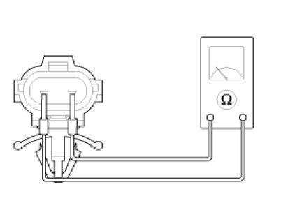
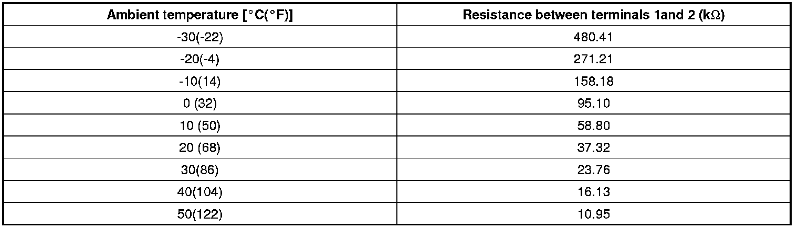

Ambient Temperature Sensor / Switch HVAC: Testing and Inspection
Inspection
1. Ignition "OFF"
2. Disconnect ambient temperature sensor.
3. Check the resistance of ambient temperature sensor between terminals 1 and 2 whether it is changed by changing of the ambient temperature.

Specification

4. If the measured resistance is not specification, substitute with a known-good ambient temperature sensor and check for proper operation.
5. If the problem is corrected, replace the ambient temperature sensor.